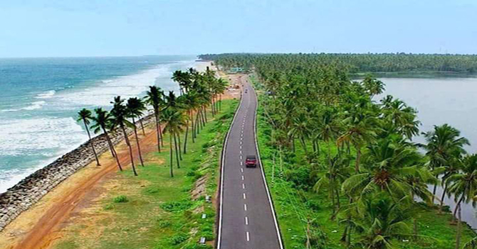
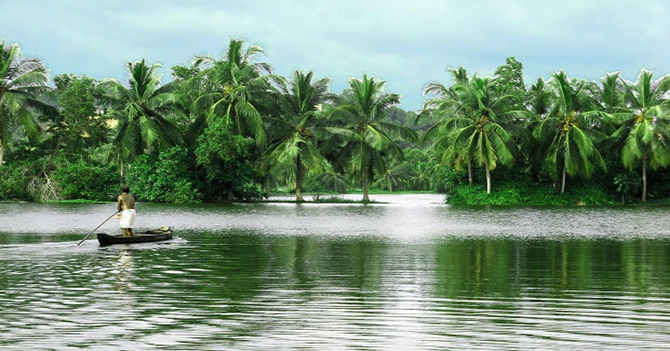
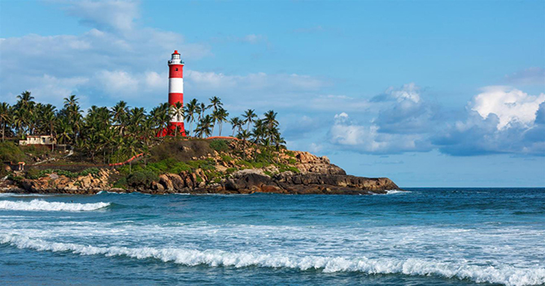

1. Kappil Lake.

Kappil Lake is just 6 km away from Varkala town. It is one of the top places to visit in Varkala. Adventure seekers can explore the beautiful waterway of Kappil lake by renting a boat. Department of Tourism has arranged a boat club where peoples can hire boats for exploring Kappil lake. You can also walk on bridge that's built across the lake and watch the scenic beauty of Kappil lake.
Bordering of Kappil lake with coconut groves and trees gave a magnificent look to it.
2. Ponnumthuruthu Island.

Ponnumthuruthu Island is at a distance of around 20 km from Varkala.This Island is also known as Golden island. It is one of the perfect destination to visit in and around Varkala. This island is perfect for nature walks, bird watching and sight-seeing.
This island contains the temple of Lord Shiva, Goddess Parvati and Lord Vishnu.
The only way to get here is to hire a boat from Nedunganda Village and reach this island. You can also enjoy the water rides around the island.
3. Varkala Lighthouse.

Varkala Lighthouse is the best place to see and a famous landmark in the beach town of Varkala. It was built by britishers in 1684 to navigate ships coming from Britain.
Standing tall at 130m high, the lighthouse offers a beautiful and magnificent view of the sea. People came here to spend a beautiful evening here.
Visiting time for Varkala lighthouse is from 3 PM to 5 PM.
4. Odayam Beach, Varkala.
Odayam Beach is around 2kms away from the Varkala beach and lies between Thiruvambadi beach and Cliff beach. It is a small oasis with more spectacular view than Varkala Beach. There are lots of resorts and places close to the beach where peoples can stay. Odayam beach let the travellers explore peaceful side of coastal town.
5. Chilakoor Beach, Varkala.
Chilakoor beach is located 15 km from Varkala. A drive to this beach will refresh your mind and give you a relaxing feel, if you ever getting bored of roaming in other beaches of Varkala. Even the sceneary of road to this beach is quite magnificent.
The spectacular journey through the village will make you want to stay here forever.